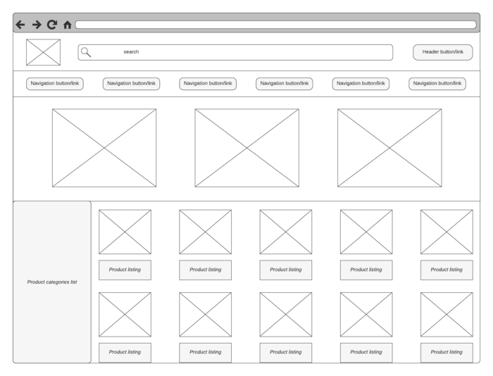
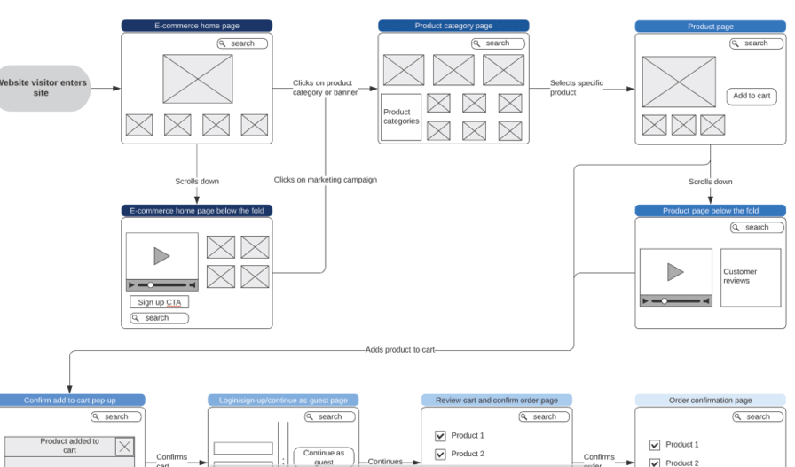

Temos diversos tipos de website na internet, vamos dar uma pesquisada sobre esses tipos de websites e nos inspirar a desenvolver o nosso próprio?
Vamos começar a pensar no website que faremos. Lembrem-se estamos construindo um website com o objetivo de auxiliar na resolução dos problemas de um dos ODS. Escolham um ODS (preferencialmente o mesmo ODS que vocês estudaram mais profundamente na etapa anterior).
1. O que será o seu website? Qual dos tipos que discutimos anteriormente?
2. O que o seu website terá?
3. Que tipo de informações existirão no seu website?
4. Como você espera que seu website funcione?
5. Como este website auxilia no ODS escolhido?
Depois de pensar no que estará no nosso website, podemos começar a dar uma cara para ele.
1. Crie um nome para seu website;
2. Desenha um logo criativo para seu website que tenha haver com o nome;
Mockups são uns modelos de rascunho que servem para os desenvolvedores conseguirem visualizar como o website deverá ficar no final. As figuras abaixo ilustram alguns mockups.

Esta primeira figura ilustra um mockup de uma única página de um website. Observem que o mockup mostra onde todos os menus, textos, figuras, botões e barras devem ficar no website final.

Esta segunda figura ilustra vários mockups, um para cada páginas diferente do website e agora conseguimos ver como o usuário vai navegar no nosso site, ou seja, conseguimos ver quais páginas serão abertas quando clicamos nos links do nosso website.
Então, vamos criar mockups para cada página que esperamos que exista no nosso website.